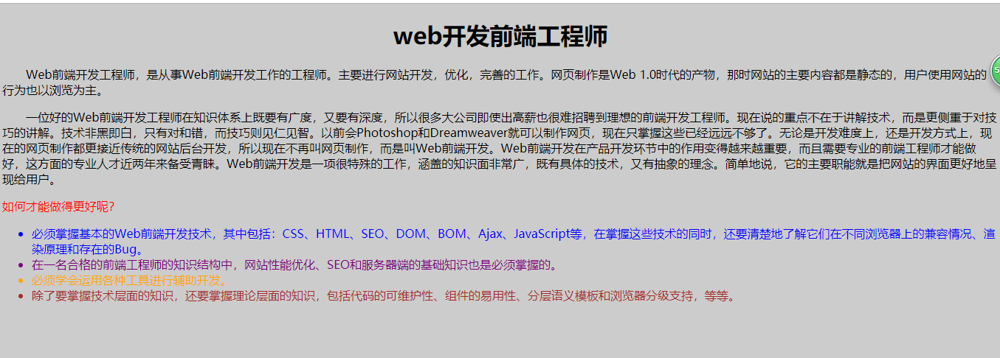

学习web的第六天
p{
font-size:18px; /*文本尺寸*/
font-family:"隶书"; /*文本字体*/
font-weight:bold; /*文本加粗 bold 加粗 bolder 更粗*/
color:red; /*文本颜色*/
text-align:center; /*文本水平居中 center 居中 justify 两端对齐 left 左对齐 right 右对齐*/
background-color:#ccc; /*背景颜色*/
background-image:url(img/*.jpg); /*背景图片 可以简写 直接加颜色 就是添加背景颜色 图片也一样*/
font-style:italic; /*文本倾斜 oblique也可以 但最好用italic*/
letter-spacing:2px; /*字符间距*/
line-height:20px; /*行高*/
text-indent:2em; /*首行缩进*/
word-spacing:2px; /*单词间距*/
line-height:2px; /*垂直居中*/
text-decoration:underline; /*字符装饰线 underline 下划线 line-through 删除线 overline 上画线 更多用于超链接样式*/
我写了个网页：
<!DOCTYPE html>
<html>
<head>
<title>前端</title>
<style type="text/css">
#h11{text-align:center;}
.p1{text-indent:2em;}
.p2{color:red;}
#li1{color:blue;}
#li2{color:purple;}
#li3{color:orange;}
#li4{color:brown;}
body{background:#ccc;}
</style>
</head>
<body>
<h1 id="h11">web开发前端工程师</h1>
<p class="p1">Web前端开发工程师，是从事Web前端开发工作的工程师。主要进行网站开发，优化，完善的工作。网页制作是Web 1.0时代的产物，那时网站的主要内容都是静态的，用户使用网站的行为也以浏览为主。</p>
<p class="p1">一位好的Web前端开发工程师在知识体系上既要有广度，又要有深度，所以很多大公司即使出高薪也很难招聘到理想的前端开发工程师。现在说的重点不在于讲解技术，而是更侧重于对技巧的讲解。技术非黑即白，只有对和错，而技巧则见仁见智。以前会Photoshop和Dreamweaver就可以制作网页，现在只掌握这些已经远远不够了。无论是开发难度上，还是开发方式上，现在的网页制作都更接近传统的网站后台开发，所以现在不再叫网页制作，而是叫Web前端开发。Web前端开发在产品开发环节中的作用变得越来越重要，而且需要专业的前端工程师才能做好，这方面的专业人才近两年来备受青睐。Web前端开发是一项很特殊的工作，涵盖的知识面非常广，既有具体的技术，又有抽象的理念。简单地说，它的主要职能就是把网站的界面更好地呈现给用户。</p>
<p class="p2">如何才能做得更好呢？</p>
<ul>
<li id="li1">必须掌握基本的Web前端开发技术，其中包括：CSS、HTML、SEO、DOM、BOM、Ajax、JavaScript等，在掌握这些技术的同时，还要清楚地了解它们在不同浏览器上的兼容情况、渲染原理和存在的Bug。</li>
<li id="li2">在一名合格的前端工程师的知识结构中，网站性能优化、SEO和服务器端的基础知识也是必须掌握的。</li>
<li id="li3">必须学会运用各种工具进行辅助开发。</li>
<li id="li4">除了要掌握技术层面的知识，还要掌握理论层面的知识，包括代码的可维护性、组件的易用性、分层语义模板和浏览器分级支持，等等。</li>
</ul>
</body>
</html>运行结果为：
